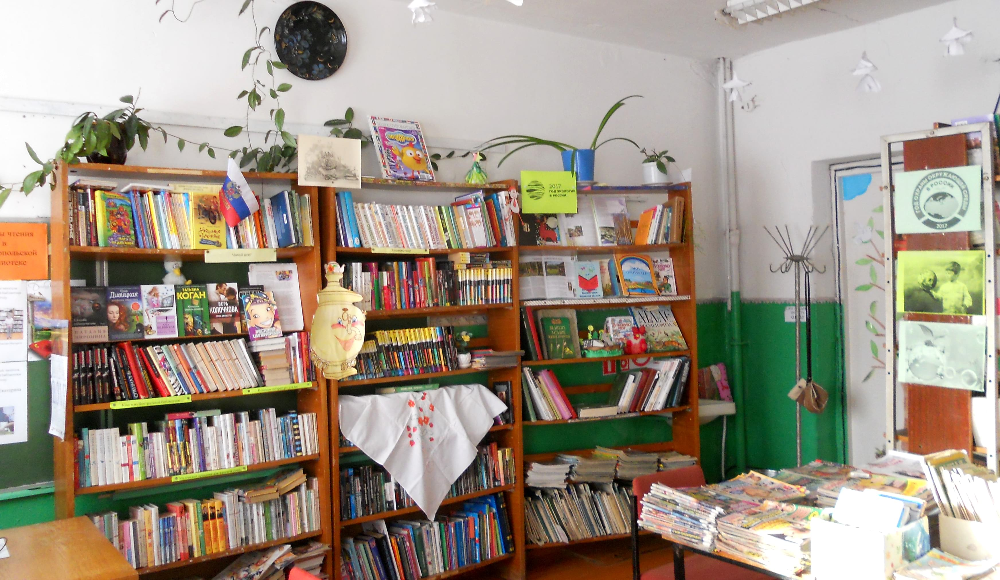
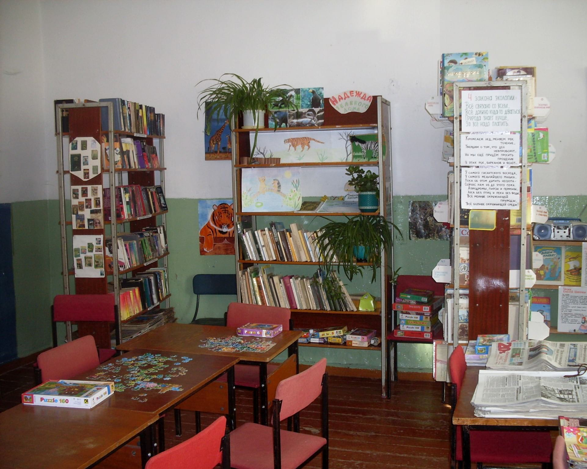
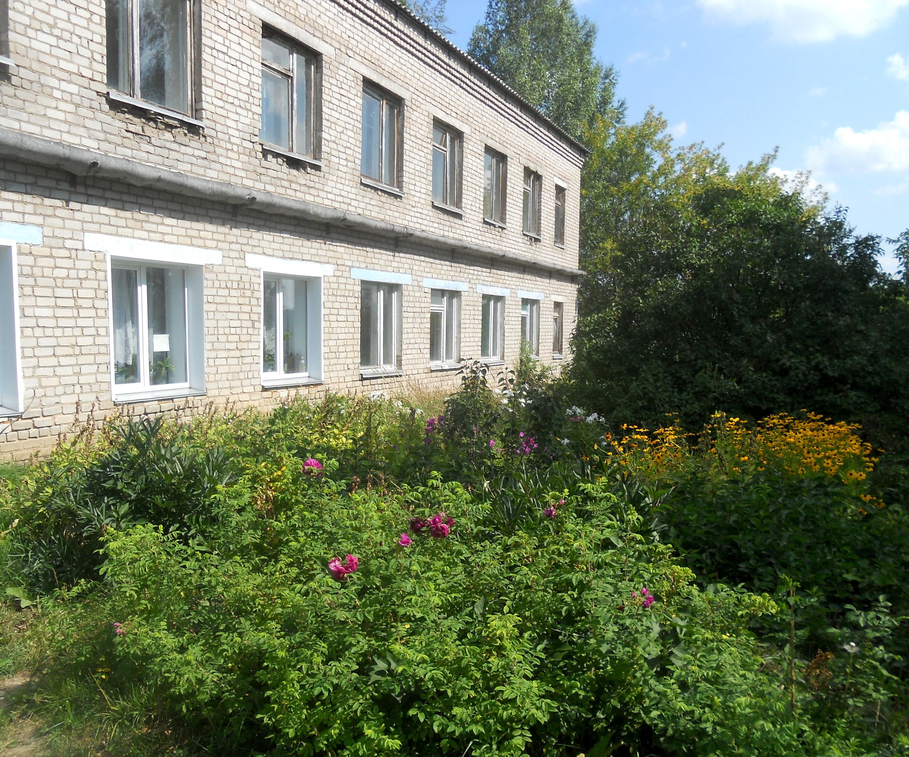

История Краснопольской библиотеки
20 марта 1973 года — день открытия библиотеки. Первый библиотекарь – Галина Васильевна Самылова – работала до 1978 года. Сначала библиотека размещалась в пристрое сельского клуба площадью 48 кв. м., затем несколько месяцев в здании сельсовета. Председатель профкома совхоза «Краснопольский» Суходоев Алексей Григорьевич дал библиотекарю 100 рублей, на которые в сунском магазине были куплены первые книги. Затем около 300 книг завезли из Коровкинской библиотеки, позднее пополнение пришло из Перелазинской. За первый год работы в библиотеку записался 91 человек, из них 32 ребёнка.
С 21 августа 1979 по 15 августа 1980 года библиотекарем работала Валентина Викторовна Дряхлых. В 1979 году в библиотеке было уже 252 читателя, поступило 720 изданий, а книговыдача составляла 5111 экземпляров. Библиотека, площадью 96 кв. м., находилась в бывшем здании конторы на Центральной улице недалеко от бани и сельсовета. В 1979 году прошла централизация. Краснопольская сельская библиотека стала филиалом Сунской Центральной библиотеки. Новые книги приобретались и обрабатывались в отделе комплектования п. Суна.
С 26 ноября 1980 до 22 июня 1982 года библиотекарем была Людмила Анатольевна Бородавкина.
Со 2 августа 1982 года библиотекарем после окончания Кировского культпросветучилища стала Елена Евгеньевна Опарина (Фалалеева). В то время в библиотеке был телевизор, радио, радиола. Библиотекарь привозила новые книги из Суны на совхозном автобусе. В 1982 году было 270 читателей, 82 из которых – дети, 2137 посещений, книговыдача – 6167.
В библиотеке работали кружки для детей «Парус», «Радуга», «Буратино», экологическое агентство «Лесовичок и К», английского языка, для старшеклассниц «Посиделки». Для детей из детсада кружки «Добрые, волшебные слова», «Вятские светлячки», «Библионик». Летом для детей и подростков проводилось много игр, конкурсов. Библиотека участвовала в областных, районных конкурсах «Голос ребёнка», «Эко-фантазёр», «Сова – птица 2005 года», «Чайка – птица 2006 года», Дней защиты от экологической опасности, Форуме юных геральдистов и многих других. Проводились экскурсии в Кировскую областную библиотеку имени Герцена и Кировскую областную детскую библиотеку имени Грина.
В данный момент библиотека располагается на первом этаже бывшей школы по соседству с Домом культуры.
  